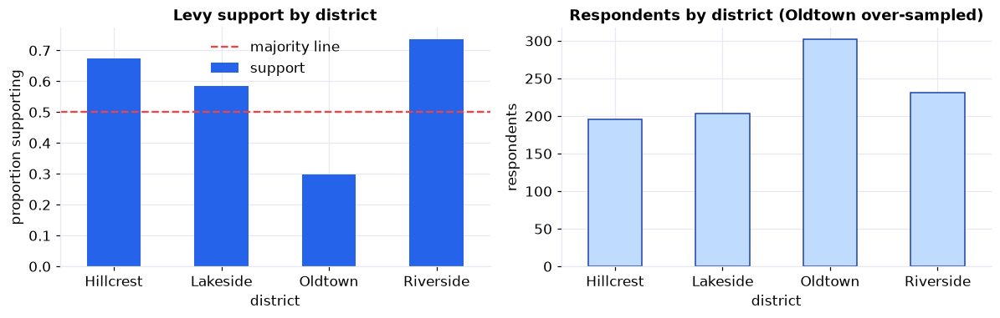
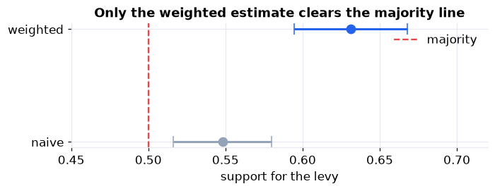

A survey is a machine for turning a few hundred answers into a statement about a whole population. It only works if two things hold: the sample represents the population, and the estimate carries an honest margin of error. Get either wrong and you can confidently report the opposite of the truth, which is exactly what nearly happens here.
It uses the whole sampling-and-estimation toolkit: stratified sampling and design weights (Part X), and confidence intervals, margin of error, and sample size (Part XI), on one realistic survey, all the way to a recommendation the board can act on.
The Survey Workflow, and the Data
The pipeline is short but every stage matters. Skip the weighting and you answer the wrong question; skip the margin of error and you overstate your certainty.
One row per sampled household: district (stratum), a
design_weight, whether the household responded, its support_levy (0/1)
and satisfaction_1_5, and an age_band. A separate Codebook and Notes sheet document
the design and the true population values.
Define, Design & Inspect (Steps 1–4)
Define the quantity and the decision
The board will put the levy on the ballot only if a majority of households support it, so the quantity is the population proportion who support it, and the decision bar is a hard 50%. It also wants the mean satisfaction (rated 1 to 5). Both are population values we estimate from a sample.
Design a stratified sample
The four districts differ in size and, it turns out, in opinion, so we sample within each district (a stratified sample) and deliberately over-sample the small districts so even the smallest has enough responses to report. That very choice is why the raw average will mislead: the sample is not a miniature of the city. Each respondent gets a design weight equal to its stratum population divided by its stratum sample size, the number of real households it represents.
Collect and inspect
Of 1,200 sampled households, about 930 responded (78%), and response is roughly uniform across districts, so nonresponse bias is small (the companion notebook quantifies it). Estimates use the respondents, each carried by its design weight. The small, low-support Oldtown district was over-sampled, so it makes up a third of the respondents but under a fifth of the city, the imbalance the weights exist to correct.
The Trap, and the Fix (Steps 5–7)
Explore before you average
Support ranges from about 34% in Oldtown to 71% in Riverside, and Oldtown is the largest bar of respondents even though it is a small district. Averaging the raw responses secretly weights by who you sampled, not who lives there.

Support swings widely by district (left), and the over-sampled low-support district dominates the respondent counts (right). That mismatch is what biases a naive average.
The naive estimate is biased
Taken at face value, the survey says support is about 55%, a whisker above a coin flip and, with its margin of error, not clearly a majority. Reporting that number would understate real support and might sink a popular measure. The problem is not too little data; it is the wrong weights.
Design weights fix the composition
Weight each respondent by how many real households it stands for and the picture changes. The library-first tool
is statsmodels' DescrStatsW: hand it the 0/1 support values and the design weights and it
returns the weighted proportion. Support jumps from about 55% to 63%, from a minority to a clear
majority, landing right on the true population value of 62% (which we know only because this is a simulated city).
Same respondents, same answers; the only change is counting each one correctly.
Uncertainty & Sample Size (Steps 8–9)
A margin of error you can defend
A point estimate without an interval is an opinion. The weighted support is 63% with a 95% margin of error of about plus or minus 4 points (roughly 59% to 67%), and the whole interval sits above 50%. One subtlety matters: design weights are not frequency counts, so the ordinary weighted-variance formula would report an absurdly tight interval. The honest interval uses the design effect: unequal weights shrink the effective sample size from 932 to about 660 (a design effect near 1.4), which widens the band. Ignoring that overstates your precision.

Only the design-weighted estimate, and its entire confidence interval, clears the majority line. The raw estimate sits astride it.
Mean satisfaction tells the same story: the naive average understates it at about 3.39, while the
design-weighted mean is 3.62 out of 5 (true value 3.63), with a tight interval. DescrStatsW
produced the weighted mean and its interval in one call.
How big should the next survey be?
Precision is a design choice you make before collecting data. For a proportion, the sample size for a target margin of error is n = (z / MoE)² × p(1 − p), inflated by the design effect. To pin support to plus or minus 3 points you need roughly 1,000 respondents under simple random sampling, and about 1,400 once this design effect is folded in. Using p = 0.5 gives the most conservative (largest) n when you have no prior estimate.
Interpret & Communicate (Steps 10–12)
The estimates are only useful once they are a recommendation, with the caveats a careful analyst names rather than hides.
Memo to the parks board
A stratified survey of 1,200 households (about 930 responding) estimates that 63% of city households support the parks levy, with a 95% margin of error of about plus or minus 4 points, a clear majority. Satisfaction with the parks averages 3.6 out of 5.
The method note that matters
The raw responses appear to show only minority support (about 55%). That is an artifact of deliberately over-sampling one small, less-supportive district. After weighting each response back to the true population, support is a solid majority. This is why survey results must always be reported on weights, not raw counts.
Honest caveats
About 22% did not respond; response is roughly uniform across districts, so the bias is small, but a nonresponse check and a post-stratification adjustment are in the Take It Further notebook. The frame covers households on the city register only, and a single satisfaction item is a coarse instrument. None of these overturns the majority finding.
Recommendation
Proceed with the levy, and size any confirmatory survey at roughly 1,000 completed responses to hold the margin of error near plus or minus 3 points.
Run the whole project in Python
The companion notebook is the full 12-step survey workflow: it lays out the stratified design and design weights, inspects response and missingness, explores by district, exposes the naive-average trap, fixes it with design weights (the headline flips from a minority to a majority), attaches a design-based margin of error using the Kish effective sample size and design effect, estimates the weighted mean satisfaction, sizes the next survey for a target precision, and writes the board a plain-English memo, all library-first with statsmodels DescrStatsW.
View opens the rendered notebook instantly.
Open in Colab runs it live. To run locally, install numpy, pandas,
matplotlib, statsmodels, and openpyxl.
🎓 Key Takeaways
- ✓Estimate on weights, not raw counts: a stratified sample is not a miniature of the population, so the naive average is biased by design.
- ✓Design weights rebuild the population: weighting each respondent by stratum-population over stratum-sample flipped support from 55% to a true 63%.
- ✓Report a margin of error, honestly: unequal weights carry a design effect that shrinks the effective sample size and widens the interval.
- ✓Size the study before you run it: about 1,000 respondents pins a proportion to plus or minus 3 points under simple random sampling.
- ✓Name the caveats: nonresponse, coverage, and measurement limits belong in the report, not hidden.
Take It Further
Five ways to stress-test the survey in the companion notebook:
A nonresponse sensitivity check
Assume nonrespondents differ from respondents and see how far the estimate could move.
Post-stratification
Re-weight respondents so each district sums to its known population total, adjusting for differential response.
A bootstrap confidence interval
Resample respondents within strata and recompute the weighted proportion many times.
The design effect, unpacked
Show how the effective sample size falls as the weights get more unequal.
A sample-size curve
Plot the required sample size against the target margin of error, with and without the design effect.
All five, worked in a companion notebook
A second notebook, Take It Further, rebuilds the Chapter 136 survey and works every extension with visuals and explanations: a nonresponse sensitivity analysis, a post-stratification adjustment, a stratified bootstrap interval, the design effect unpacked, and a sample-size curve.
Quiz: Test Yourself
Eight questions on the survey workflow, from sampling design to margin of error. Answer them, hit Check Answers, and keep refining until you score 100%. Your progress is saved.
This study designed a survey and estimated a population quantity from a sample. Next we make that estimation rigorous. Point vs. Interval Estimation opens Part XI, turning single best guesses into ranges that carry a stated level of confidence.